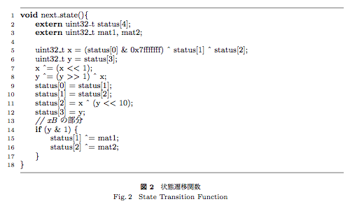

Tiny Mersenne twisterの逆算
この記事はPokémon RNG Advent Calendar 2016の9日目の記事です．
Tiny Mersenne twister(以下Tiny MT)において現在のstatus4つ(128bitのseed)が与えられた時，1つ前のstatus4つを求めることは出来るか計算したところ，出来ることがわかったのでまとめます．
TinyMTのstatus更新式は次のようになっています．

斎藤睦夫, and 松本眞. “高速並列計算用の状態空間の小さな高品質疑似乱数生成器.” 研究報告ハイパフォーマンスコンピューティング (HPC) 2011.3 (2011): 1-6. より引用．
基本的にはこの式を下から逆に計算するだけになります．
前準備
前準備として，$f(x) = x \oplus (x >> n)$のような関数の逆関数の求め方を紹介します($\oplus$は排他的論理和を表します)．
メルセンヌツイスタの調律を行列で書く
また現在のstatusをそれぞれ$s_1, s_2, s_3, s_4$と書き，求めたい1つ前のstatusをそれぞれ$ps_1, ps_2, ps_3, ps_4$と書きます．
14行目から17行目
12行目をみれば$y$は$s_3$だとわかるので，$s_3$の奇偶をみれば良いことになります．よって
$${\rm s_1^{\prime}} =
\begin{cases}
s_1 & (s_3 が偶数) \\
s_1 \oplus {\rm mat_1} & (s_3 が奇数)
\end{cases} \\
{\rm s_2^{\prime}} =
\begin{cases}
s_2 & (s_3 が偶数) \\
s_2 \oplus {\rm mat_2} & (s_3 が奇数)
\end{cases}$$
となります．
9行目から12行目
まず${\rm ps_1, ps_2}$はただ単に代入しているだけなので
$${\rm ps_1} = s_0 \\
{\rm ps_2} = s_1^{\prime}$$
となります．
説明のために$x,y$をそれぞれ次のように定義します．
$$\begin{align*}
y &= s_3 \\
x &= s_2^{\prime} \oplus (y << 10)
\end{align*}$$
5行目から8行目
ps3を求める
式の上で区別するために8行目の右辺の$y$を$y^{\prime}$と置きます．
これを使って8行目を丁寧に書くと，$y = y^{\prime} \oplus (y^{\prime} >> 1) \oplus x$となります．$x$を移行し，行列$A$を$f(x)=x \oplus (x >> 1)$と変換する行列だと考えると最終的に8行目は$x \oplus y = A y^{\prime}$と書けます．
上で紹介したメルセンヌツイスタの調律を行列で書く を参考にこの行列$A$の逆行列$A^{-1}$を求めてやると，$y^{\prime} = A^{-1}(x \oplus y)$となり，6行目よりこれは${\rm ps_3}$に一致します．以上のことをまとめると
$$\begin{array}{cc}
{\rm ps_3} = A^{-1}(x \oplus y) & (Aはf(x)=x \oplus (x >> 1)を表す行列)
\end{array}$$
となります．
ps0を求める
先ほどと同じく7行目の右辺の$x$を$x^{\prime}$と置きます．
これを使って7行目を丁寧に書くと，$x = x^{\prime} \oplus (x^{\prime} << 1)$と書けます．行列$B$を$f(x) = x \oplus (x << 1)$と変換する行列だと考えると，$x^{\prime} = B^{-1}x$となります．
これを使うと${\rm ps_0}$は
となります．
まとめ
これですべての${\rm ps_0, ps_1, ps_2, ps_3}$を求める事ができました．
行列$A$は$f(x)=x \oplus (x >> 1)$を表す行列，行列$B$は$f(x) = x \oplus (x << 1)$を表す行列だとすると，まとめると次のようになります．
$$\begin{align*}
{\rm ps_1} &= s_0 \\
{\rm ps_2} &= s_1^{\prime} \\
{\rm ps_3} &= A^{-1}(x \oplus y) \\
{\rm ps_0} &= B^{-1}x \oplus {\rm ps_1} \oplus {\rm ps_2}
\end{align*}$$